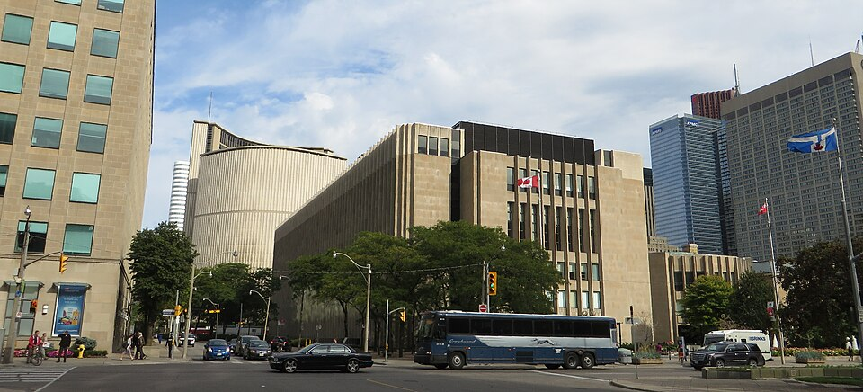
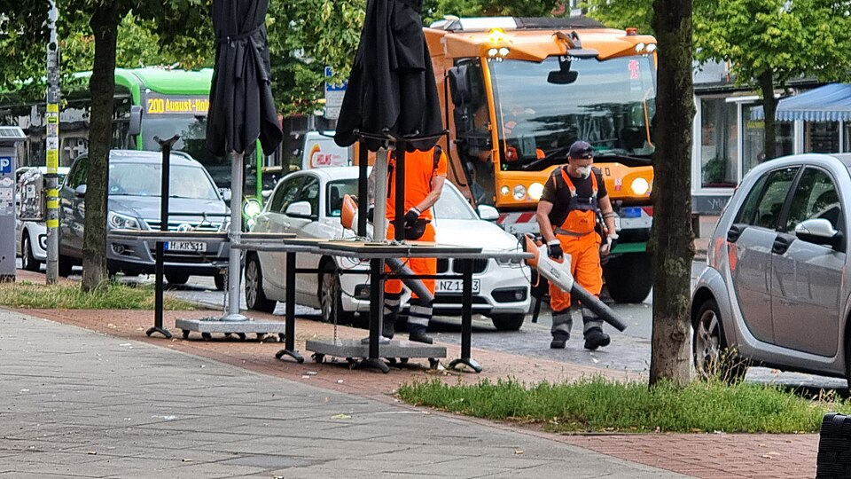
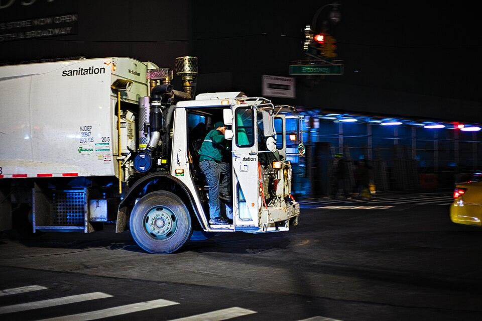
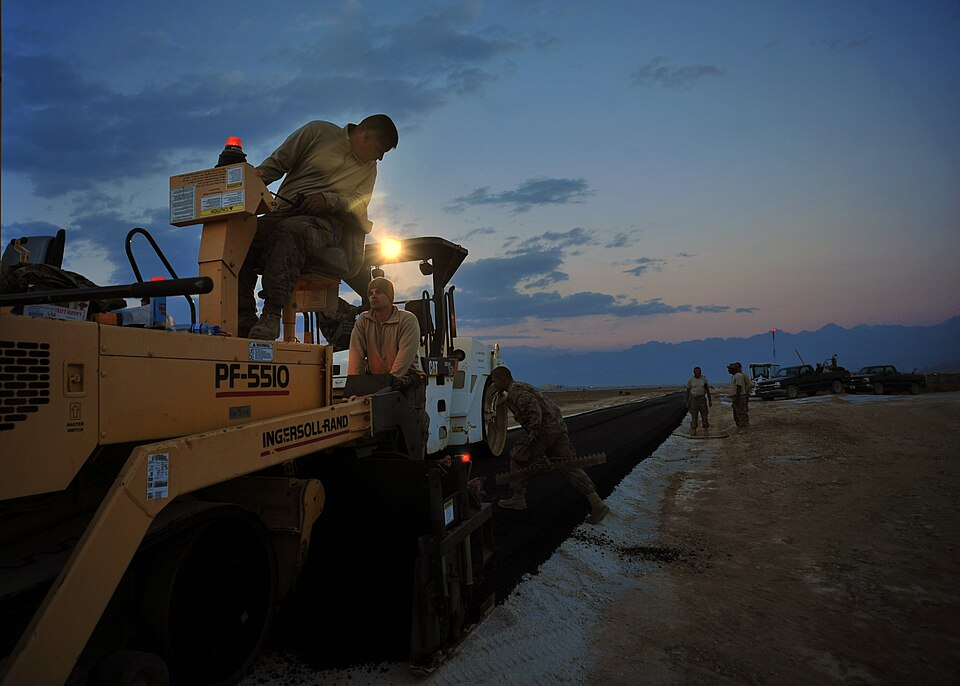
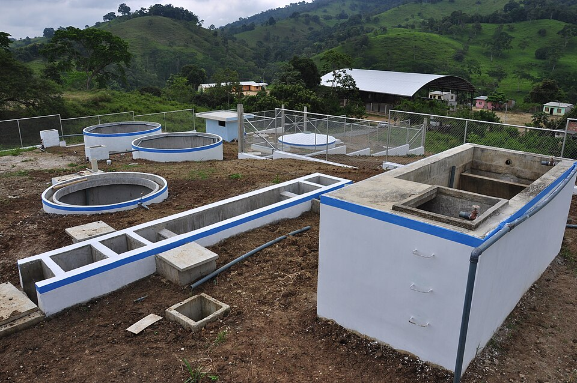
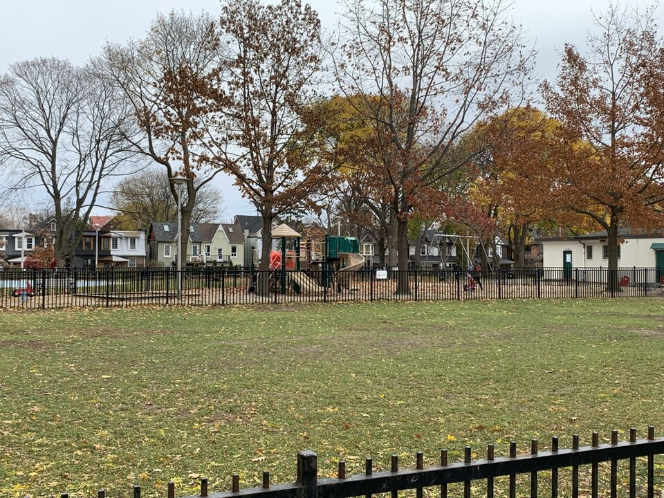

Water Supply
View water supply updates, report interruptions, and find information about water-related services.
Report a water issue →Find essential municipal information, learn about water and waste services, and share a civic concern with your municipal corporation.

Access important services provided for residents.
View water supply updates, report interruptions, and find information about water-related services.
Report a water issue →Check waste collection information and report missed pickups or public-area waste concerns.
View collection schedule →Share concerns about municipal services so the appropriate department can review them.
Register a complaint →Real-life municipal service photography, spoken English citizen guide, and field operations video.
Genuine photographs showing city administration, street sanitation, waste collection, road repairs, water treatment, and public parks. Click any photo to enlarge.
Civic headquarters housing municipal administration, citizen desks, and public service records.
Photo: Wikimedia Commons (CC BY-SA 2.0)
Municipal sanitation crews clearing sidewalks and roadways to keep commercial and residential streets spotless.
Photo: Wikimedia Commons (CC BY-SA 4.0)
Dedicated municipal collection trucks transporting household and neighborhood waste safely on daily routes.
Photo: Wikimedia Commons (CC BY 2.0)
Civil engineering and paving crews resurfacing damaged roadways and maintaining smooth urban transport links.
Photo: Public Domain Civic Archive
Municipal filtration basins, water treatment channels, and distribution facilities safeguarding clean city water.
Photo: Wikimedia Commons (CC BY-SA 2.0)
Maintained neighborhood green spaces, playgrounds, and shared community infrastructure open to all residents.
Photo: Wikimedia Commons (CC BY-SA 4.0)Spoken English introduction covering municipal services, complaint reporting, and civic responsibility.
Real-life municipal street sweeping and neighborhood waste collection operations in progress.
Activities shown: Municipal sidewalk and pavement street sweeping followed by automated residential waste pickup along a neighborhood route. Real ambient audio included.
Video clips: Wikimedia Commons (CC BY-SA 4.0) · Walk-behind street sweeper & neighborhood trash collection truck.
Important notices for citizens. Check here for service updates.
Residents are encouraged to keep household waste separated for responsible collection.
Citizens can use the complaint section to report water supply interruptions in their area.
Please keep public spaces clean and use the designated waste collection points.
A sample schedule showing how collection details can be presented.
| Service Area | Service | Collection Day | Information |
|---|---|---|---|
| Central Zone | Household waste | Monday – Saturday | Scheduled |
| North Zone | Household waste | Monday – Saturday | Scheduled |
| South Zone | Household waste | Monday – Saturday | Scheduled |
| All Zones | Public-area cleaning | As per local route | Ongoing |
Note: The schedule above is sample website content for this practicum, not an official municipal timetable.
Use this sample form to describe an issue related to municipal services.
Choose a service category and provide a clear description of the issue. Include your area so the relevant department can identify the location.
Use the contact information below for general municipal enquiries.
Municipal Corporation Office
City Centre, Main Road
Phone: 1800-000-0000
Monday – Friday, 9:00 AM – 5:00 PM
help@cityconnect.example
For general service enquiries
The address and contact details are illustrative placeholders for the practicum project.